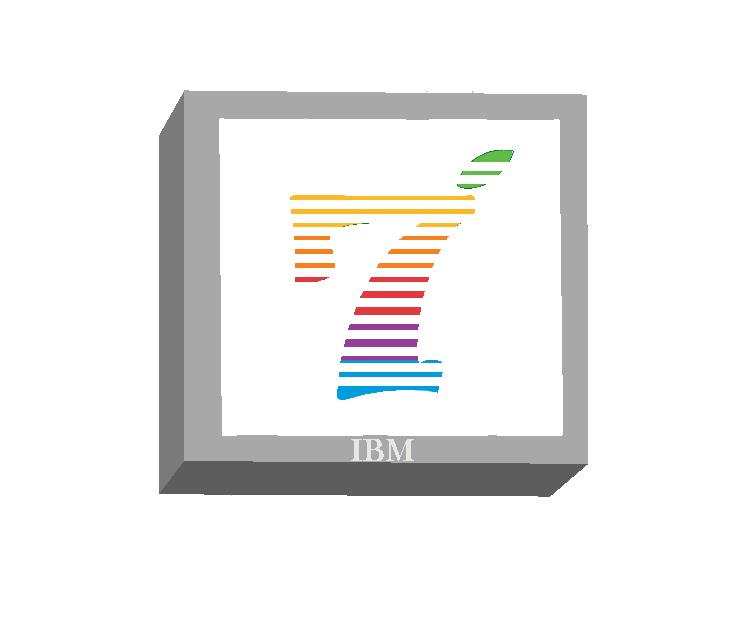

| Explore o fascinante universo pós-Apple de Steve Wozniak! Este site é um mergulho profundo na vida e nas realizações do brilhante cofundador da Apple após sua saída da empresa que ajudou a criar. Descubra os projetos, as inovações e o legado contínuo de um dos visionários mais influentes da era da tecnologia. |  | Entre nos bastidores da evolução da IBM após 1985! Este site é uma jornada através das transformações, inovações e conquistas marcantes da IBM desde meados dos anos 80. Explore como essa gigante da tecnologia moldou e foi moldada pelo cenário empresarial e tecnológico em constante mudança, deixando um impacto duradouro no mundo da computação e dos negócios. |
©Site criado e desenvolvido pelo Grupo 7. Todos os direitos reservados™